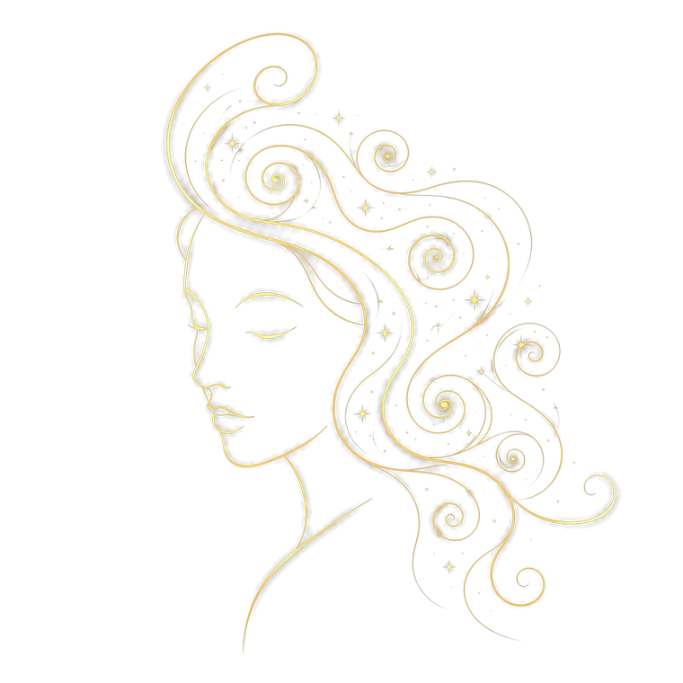

Un rythme pour la famille.
« La Présence fait vivre. La Mémoire fait durer. »
L'application navigue en mer d'essai, dans une vraie famille. Ouverture prochaine.
L'interface qui repose l'attention.
Mana Family refuse les codes des réseaux sociaux. Ici, il n'y a pas de flux infini à faire défiler, pas de compteurs de non-lus, pas de chiffres rouges, pas d'injonction à la performance.
L'écran d'accueil est un ciel : une constellation où vos proches dérivent doucement, comme des navires au mouillage. Quand un geste de soin est posé — une fièvre signalée à la grand-mère qui garde le petit demain, un souvenir déposé — l'astre concerné s'éclaire d'une lueur tiède qui respire. C'est tout. Vous savez que quelqu'un a veillé, et vous pouvez refermer votre téléphone.
Quinze secondes. Aucun bouton pressé. L'application a rempli sa mission.
Trois couches de profondeur dans le temps.
Un Cercle n'est pas une taille de groupe : c'est une profondeur familiale. Et le graphe est centré sur les personnes, jamais sur un foyer — un enfant de deux maisons garde une seule continuité, entière.
Le quotidien : parents, co-parents, enfants. La base vivante de toute famille.
La dimension intergénérationnelle : grands-parents, figures de soutien. La famille dans sa durée.
Cousins, oncles, tantes, branches élargies. La famille comme réseau vivant complet.
Les trois Cercles sont ouverts à toutes les familles, gratuitement, dès le premier jour. La structure est un droit, pas un produit.
Cinq lois, gravées avant la première ligne de code.
✦La mémoire brute est inaliénable
Ce que votre famille confie au temps n'expire jamais, sur aucune formule, gratuite ou payante. Aucune famille ne lira jamais « vos souvenirs seront supprimés ».
✦Le silence est un état légitime
Une constellation peut être active, présente, ou au repos. L'application ne vous relancera jamais : quand rien ne se passe, le ciel dit simplement « La constellation se repose. » — et il attend, comme une maison attend le retour de ceux qui l'habitent.
✦Chaque astre est souverain de sa lumière
Toute personne peut voiler sa mémoire aux autres cercles sans rien détruire de sa propre archive, et refuser de figurer dans un objet — même déjà payé. Le droit de l'astre l'emporte toujours sur le droit du portefeuille.
✦La lueur est asymétrique
On voit que quelqu'un a veillé. On ne voit jamais qui n'a pas veillé. La présence est un cadeau, jamais une dette — veiller n'est pas surveiller.
✦Le regret n'est jamais un levier
Aucune notification, aucune relance, aucun e-mail ne dira « avant qu'il soit trop tard ». Cette phrase appartient aux familles. Nous n'utiliserons jamais le regret comme moteur de croissance.
✦Les enfants sont des astres, pas des utilisateurs
Aucun usage social, aucun scoring, aucune comparaison ; accès uniquement via les adultes. Et à ses dix-huit ans, l'enfant reçoit la propriété pleine de sa continuité — la famille lui remet sa mémoire comme on remet un héritage.
On ne paie jamais l'accès à sa famille.
La structure entière — les trois Cercles, tous les membres, toutes les transmissions, la mémoire complète — est gratuite, pour toujours. Ce qui se paie, c'est l'artisanat qu'on ajoute par-dessus :
- 0 € Présence — la famille veille et se souvient
- 19 €/mois Mémoire — la mémoire devient un récit (ou 190 €/an, 2 mois offerts)
Et chaque offre payante peut être un cadeau — l'argent circule ici comme la mémoire : d'une génération vers la suivante.
Mana Family est la forme que prend cette loi
quand elle s'applique à une famille.